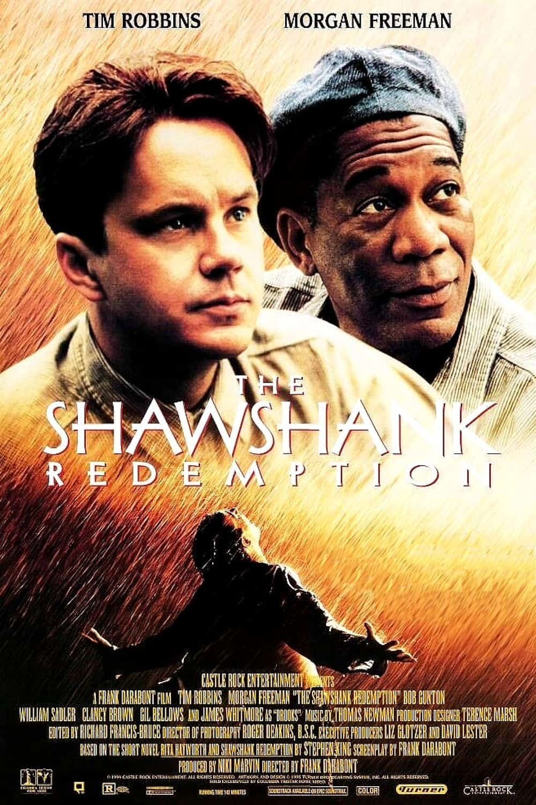

Cinematicfilm | The Dark Knight | The godfather | The godfather part two | The shawshank redemption
رستگاری در شاوشنک (انگلیسی: The Shawshank Redemption) فیلمی آمریکایی در ژانر درام به نویسندگی و کارگردانی فرانک دارابونت و بر پایهٔ رمان کوتاه ریتا هیورث و رستگاری در شاوشنک (۱۹۸۲) نوشتهٔ استیون کینگ است که در سال ۱۹۹۴ منتشر شد. این فیلم داستان بانکداری به نام اندی دوفرین (تیم رابینز) را روایت میکند که بهدلیل قتل همسرش با معشوقهاش، علیرغم ادعای بیگناهی به حبس ابد در بازداشتگاه شاوشنک محکوم میشود. او در طول دو دهه بعدی با یک قاچاقچی زندانی دیگر به نام الیس «رد» ردینگ (مورگان فریمن) رفاقت دارد و نقش بهسزایی در عملیات پولشویی سرپرست زندان، ساموئل نورتون (باب گانتون) ایفا میکند. ویلیام سدلر، کلنسی براون، گیل بیلاز و جیمز ویتمور در نقشهای مکمل حضور دارند.

فرانک دارابونت در سال ۱۹۸۷ حق انتشار داستان استیون کینگ را خریداری کرد اما توسعهٔ فیلم را تا پنج سال بعد آغاز نکرد. او فیلمنامه را در یک دورهٔ هشت هفتهای نوشت. او دو هفته پس از ارسال فیلمنامه به کسل راک انترتینمنت، بودجهٔ ۲۵ میلیون دلاری برای ساخت رستگاری در شاوشنک را تهیه کرد و مراحل پیش از تولید آن در ژانویهٔ ۱۹۹۳ آغاز شد. فیلمبرداری اصلی از ژوئن تا اوت ۱۹۹۳ تقریباً بهطور کامل در منسفیلد، اوهایو انجام شد و فضای زندان فیلم در اوهایو استیت فیلمبرداری شد. گرچه فضای داستانی در ایالات مین واقع شدهاست، اما خود فیلم در ایالت اوهایو فیلمبرداری شد. این پروژه بسیاری از ستارههای آن زمان از جمله تام هنکس، تام کروز و کوین کاستنر را برای ایفای نقش اندی به خود جلب کرده بود. توماس نیومن وظیفهٔ ساخت موسیقی فیلم را بر عهده داشت.
گرچه رستگاری در شاوشنک هنگام انتشار با استقبال منتقدان روبرو شد و بهویژه برای داستان و نقشآفرینی رابینز و فریمن مورد تحسین قرار گرفت اما در گیشه با شکست همراه بود و تنها ۱۶ میلیون دلار در نخستین نمایش خود فروش داشت. دلایل زیادی برای شکست فیلم در آن زمان ذکر شد؛ از جمله رقابت با فیلمهایی مانند داستان عامهپسند و فارست گامپ، عدم محبوبیت عمومی فیلمهای زندان، نبود شخصیتهای زن و حتی عنوان فیلم که برای تماشاگران گیجکننده تلقی میشد. این فیلم در ادامه نامزد دریافت چندین جایزه از جمله هفت جایزهٔ اسکار شد. نمایشی مجدد از طریق سینما که با سود بینالمللی ترکیب شده بود، فروش گیشهٔ فیلم را به ۷۳٫۳ میلیون دلار رساند.
بیش از ۳۲۰٬۰۰۰ نسخه از سیستم ویدئوی خانگی این فیلم در سراسر ایالات متحده ارسال شد و با توجه به نامزدیهای دریافتشده برای جوایز و سر زبانها افتادن، به یکی از برترین فیلمهای اجارهای سال ۱۹۹۵ تبدیل شد. حق پخش این فیلم پس از خرید کسل راک به ترنر برادکستینگ سیستم به دست آمد و از سال ۱۹۹۷ بهطور منظم در شبکهٔ تیانتی نمایش داده شد و محبوبیت آن را بیشتر کرد. این فیلم چند دهه پس از انتشار همچنان بهطور منظم پخش میشود و در چندین کشور محبوبیت زیادی پیدا کرد و بینندگان و افراد مشهوری از آن بهعنوان منبع الهام خود یاد کردهاند. مردم از این فیلم در نظرسنجیهای مختلف بهعنوان فیلم مورد علاقه خود یاد کردهاند. در سال ۲۰۱۵، کتابخانهٔ کنگره ایالات متحده این فیلم را برای حفظ در فهرست ملی ثبت فیلم که از دید «فرهنگی، تاریخی یا زیباییشناسی» مهم هستند، برگزید.
اندی دوفرین (تیم رابینز) بانکدار جوانی است که به جرم قتل همسر و معشوقه پنهانیاش به حبس ابد در زندان ایالتی شائوشنک محکوم میشود. وی تأکید میکند که این جرمی است که مرتکب نشده، ولی قاضی تشخیص میدهد که او گناهکار است. او سالهای متعددی را در این زندان میگذراند در حالی که تنها سرگرمیاش دستوپنجه نرم کردن با افرادی از پایینترین طبقهٔ جامعه است؛ کسانی مثل همجنس گرایان و قاتلها که مدام او را آزار و اذیت میکنند. آلیس بوید رِدینگ (مورگان فریمن) یکی از زندانیهای سیاهپوست و راوی داستان است که به این مشهور است که میتواند هرچیزی را در زندان فراهم کند. او کسی است که اندی بعد از چند ماه بیش از دو کلام با او صحبت میکند و از او یک نوع چکش مخصوص میخواهد. رد ابتدا فکر میکند که اندی برای فرار از زندان این چکش را میخواهد ولی پس از دیدن اندازه چکش، متوجه میشود که بسیار کوچک است و برای شکستن سنگهای کوچک طراحی شده؛ رد، راوی فیلم روایت میکند که سوراخ کردن دیوار زندان با این چکش ششصد سال زمان میبرد؛ بعدها وی از رد درخواست پوستری بزرگ از ریتا هیورث، بازیگر زن مشهور را میکند و آن را به دیوار سلول خود میآویزد. وقتی رئیس زندان از سلول اندی بازرسی میکند چون میبیند انجیل در دست اندی است، او را به خاطر چسباندن پوستر سکسی بر روی دیوار، میبخشد؛ سپس به انجیل اشاره میکند و میگوید «رستگاری در این کتاب نهفته اندی.» و از سلول خارج میشود.
بعدها رئیس زندان متوجه موقعیت و تحصیلات اندی میشود و از او برای پولشویی رشوههایش استفاده میکند. اندی و رد سالهای زیادی در زندان میگذرانند تا اینکه پسر جوانی به عنوان زندانی به شاوشنک منتقل میشود. وی که فردی دلنشین است، خیلی سریع تبدیل به یکی از دوستان اندی و رد میشود و وقتی ماجرای اندی را میشنود، داستانی را که قبلاً از یکی از همسلولیهایش در زندانی دیگر شنیده، تعریف میکند؛ که حکایت از کشته شدن زن اندی به دست آن زندانی دارد. رئیس زندان که از شهادت دادن این جوان به نفع اندی و روشن شدن حقیقت قتل و آزادی اندی بخاطر لو رفتن خلافها و پولشوییهایش میترسد، پس از کشاندن این جوان به محوطه زندان، دستور شلیک به وی را صادر و او را میکشد. یک روز اندی با رد دربارهٔ جزیرهای به نام «زواتانئو» صحبت میکند؛ صحبتهای وی که با لبخندی تلخ همراه است توسط موسیقی متنی با همین نام ساختهٔ نیومن همراه میشود. او میگوید میخواهد زندگیاش را در آنجا بگذراند؛ «مکانی گرم و بدون خاطره». رد که ازین حرفها تعجب کرده به او میگوید نباید خیالبافی کند و وقتی به حبس ابد محکوم است نباید به آزادی امید داشته باشد زیرا این مسئله میتواند او را نابود کند. او از جا بلند میشود و پس از گفتن اینکه حق با رد است و همهٔ اینها به انتخابی ساده منتهی میشود، معروفترین دیالوگ فیلم را به رد میگوید و آنجا را ترک میکند:
«یا با امید زندگی کن؛ و یا به پیشواز مرگ برو…»د که ازین حرف نگران شدهاست و فکر میکند اندی فکر خودکشی را در سر میپروراند، با دوستان خود در اینباره صحبت میکند و شگفتزدهتر میشود وقتی یکی از آنها میگوید اندی امروز یک طناب از او گرفتهاست. آنها با نگرانی تمام شب را میگذرانند.
«حق با شما بود رئیس! راه رستگاری در این کتاب نهفته است!»
«... امید چیز خوبیه؛ شاید بهترینِ چیزها؛ و هیچ چیز خوبی هیچ وقت از بین نمیره…» و....
«رستگاری در شاوشنک» صدرنشین این لیست با امتیاز ۹.۳ از ۱۰ است.
تیم رابینز در نقش اندرو «اندی» دوفرین: یک بانکدار موفق است که ناگهان به جرم کشتن همسرش به حبس ابد محکوم میشود. او شخصیت سرد و محکمی دارد و یکی از معدود زندانیهای جدیدی است که میتواند با شرایط زندان کنار بیاید. اندی دوفرین هیچگاه در طول فیلم امید خود را از دست نمیدهد و در نامهای که برای رد به جا گذاشته امید را بهترینِ امور مینامد. این شخصیت در لیست "۱۰۰ سال… ۱۰۰ قهرمان و شرور" که لیست ۵۰ قهرمان و ۵۰ شخصیت منفی برتر تاریخ سینما به انتخاب بنیاد فیلم آمریکا (بفا) نامزد شد؛ ولی نتوانست مقامی به دست بیاورد.
مورگان فریمن در نقش الیس بوید «رد» ردینگ: راوی داستان و کسی که در زندان با اندی دوفرین دوست میشود. او شخصیتی آرام و منطقی دارد ولی به اندازهٔ اندی به امید اعتقاد ندارد. با این حال، در آخر داستان که به جزیرهٔ "زواتانئو" میرسد، گویی شخصیتش تغییر کرده و این بار به امید کاملاً اعتقاد پیدا کردهاست. مورگان فریمن برای بازی این نقش، نامزد جایزهٔ اسکار بهترین بازیگر نقش اول مرد شد ولی آن را تام هنکس که نقش "فارست گامپ" را در فیلمی به همین نام بازی کرده بود باخت.
باب گانتون در نقش رئیس زندان ساموئل نورتون: شخصیت منفی اصلی داستان. او که منطقی خشک و مذهبی دارد، در طول طرح داستانی فیلم کمکم به پولشویی، تهدید و در نهایت قتل روی میاورد. این شخصیت در لیست "۱۰۰ سال… ۱۰۰ قهرمان و شرور" که لیست ۵۰ قهرمان و ۵۰ شخصیت منفی برتر تاریخ سینما به انتخاب بنیاد فیلم آمریکا (بفا) نامزد شد؛ ولی نتوانست مقامی به دست بیاورد.
کلانسی براون در نقش کاپیتان بایرون هادلی: کاپیتان هادلی نیز یکی از شخصیتهای منفی فیلم است. او بسیار سرسخت است و از آسیبهای جدی و قتل هیچ ترسی ندارد. او در پایان فیلم به خاطر همکاری در پولشوییهای نورتون دستگیر میشود و آنطور که "رد" روایت میکند، "وقتی او را میبردند مثل یک بچه گریه میکرد.
گیل بیلاز در نقش تامی ویلیامز: یکی از زندانیهای جوان که نوزده سال بعد از اندی به زندان شاوشنک میآید. او شخصیتی پرجنب و جوش دارد خیلی سریع با اندی و رد، و بقیهٔ زندانیها دوست میشود. او که بیسواد است، در مدتی که در شاوشنک است توسط اندی آموزش میبیند و در نهایت به کمک وی موفق به اخذ دیپلم میشود. تامی پس از اینکه متوجه میشود اندی به جرم قتل در زندان است، نزد وی رفته و با بازگو کردن خاطرات خود از هم سلولی سابقش که در جریان یک سرقت، همسر یک بانکدار (که این بانکدار همان اندی دوفرین بودهاست) و معشوقه وی را به قتل رسانده پرده از راز جنایتی که اندی به جرم آن در حال حاضر در زندان است، برمیدارد. این موضوع سبب میشود تا اندی نزد رئیس زندان برود و جریان قتل همسرش را برای وی تعریف نماید و خواستار تشکیل پرونده جدیدی در این خصوص گردد. این مسئله باعث نگرانی رئیس زندان از احتمال تشکیل دادگاه و بیان حقایق توسط تامی گردیده و چون اندی از تمام جریانات پولشویی و فسادهای مالی رئیس زندان آگاه بوده، آزادی وی احتمال فاش نمودن این تخلفات را در برخواهد داشت، بنابراین رئیس زندان با کشاندن ویلیامز به بیرون محوطه، دستور شلیک به تامی ویلیامز را صادر نموده و وی با اصابت چند گلوله در جا جان میسپارد و علت کشته شدن وی را شلیک نگهبانان در حین فرار از زندان اعلام میکنند.
مارک روستون در نقش باگز دیاموند
جیمز ویتمور در نقش بروکز هاتلن: یکی از زندانیان پیر که سواد دارد و مسئول کتابخانه زندان است. او در مدتی که اندی در کتابخانه کار میکند با او دوست میشود ولی وقتی از زندان آزاد میشود، عدم کارآمدیش باعث میشود افسرده شود و در نهایت به زندگی خود پایان دهد. جیمز ویتمور، بازیگر این شخصیت به خاطر علاقهٔ شخصیای که کارگردان فیلم فرانک دارابونت به او داشت، از ابتدا برای بازی در این نقش انتخاب شده بود.
پل مککرین در نقش نگهبان تراوت
| قسمت | نامزد | جوایز |
|---|---|---|
| جایزه اسکار بهترین فیلم | فرانک دارابونت و نیکی ماروین | نامزد |
| جایزه اسکار بهترین بازیگر نقش اول مرد | مورگان فریمن | نامزد |
| جایزه اسکار بهترین فیلمنامه اقتباسی | فرانک دارابونت | نامزد |
| جایزه اسکار بهترین فیلمبرداری | راجر دیکنز | نامزد |
| جایزه اسکار بهترین تدوین فیلم | ریچارد فرانسس-بروس | نامزد |
| جایزه اسکار بهترین موسیقی فیلم | توماس نیومن | نامزد |
| بهترین فیلم خارجیزبان | دارابونت | برنده |
| بهترین انتخاب بازیگر | برتی دبورا آکویلا | برنده |
Cinematicfilm | The Dark Knight | The godfather | The godfather part two | The shawshank redemption